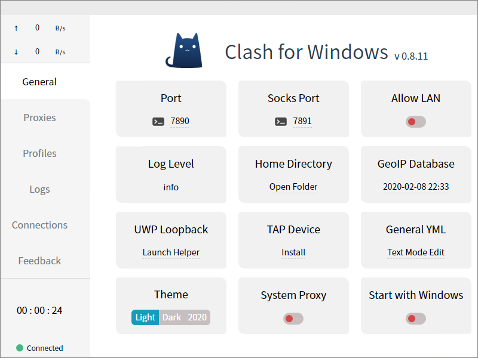

Clash for Windows Tutorial
Clash is a cross-platform proxy client written in Go. It supports Shadowsocks and V2Ray servers, though not ShadowsocksR. The core Clash client is available for macOS, FreeBSD, Linux, and Windows. “Clash for Windows” is a graphical user interface (GUI) for Clash on Windows.
This tutorial will demonstrate both core Clash from the command line on a Windows platform and the Clash for Windows GUI.
1. Create V2Ray Server
To follow along with this tutorial, you will need a V2Ray server. The examples in this tutorial use a V2Ray server that implements the WebSocket protocol. Tutorials elsewhere on this site explain in more detail how to create a V2Ray server. Therefore we will repeat here only the most essential steps to create a V2Ray server. This outline is for a server running CentOS 8 with an Nginx frontend. We assume that you start with a server that is up to datetime and with a firewall that is open for HTTP and HTTPS.
1.1. Install Nginx
Install and start Nginx:
yum install nginx
systemctl enable nginx
systemctl start nginx
1.2. Add Content
Add some sample content to the web server:
yum install wget zip unzip
wget https://github.com/lionlibr/sample-hexo-blog/archive/master.zip
unzip master.zip
cd sample-hexo-blog-master
cp -rf public/* /usr/share/nginx/html/
You can now test that your basic web server and its content appear as expected in a browser:
1.3. Install V2Ray
Install V2Ray:
cd ~
wget https://install.direct/go.sh
bash go.sh
1.4. Configure V2Ray
Edit configuration file /etc/v2ray/config.json.
Add error logging, make it listen on localhost only,
and add specification of the WebSocket protocol
and path /secret/.
The results will look like this, except with your
port and id:
{
"log": {
"loglevel": "warning",
"access": "",
"error": "/var/log/v2ray/error.log"
},
"inbounds": [{
"port": 38483,
"listen": "127.0.0.1",
"protocol": "vmess",
"settings": {
"clients": [
{
"id": "7d5af219-0ac5-491b-bfa8-68968d7a2774",
"level": 1,
"alterId": 64
}
]
},
"streamSettings": {
"network": "ws",
"wsSettings": {
"path": "/secret/"
}
}
}],
"outbounds": [{
"protocol": "freedom",
"settings": {}
},{
"protocol": "blackhole",
"settings": {},
"tag": "blocked"
}],
"routing": {
"rules": [
{
"type": "field",
"ip": ["geoip:private"],
"outboundTag": "blocked"
}
]
}
}
1.5. Reconfigure Nginx
Edit /etc/nginx/nginx.conf. Set the server name.
For example, if your hostname is
sanfrancisco.example.com:
server_name sanfrancisco.example.com;
Create /etc/nginx/default.d/v2ray.conf.
Specify a location block to send requests for the /secret/
directory to V2Ray on its listening port. With our example of
port 38483:
location /secret/ {
proxy_redirect off;
proxy_pass http://127.0.0.1:38483/secret/;
proxy_http_version 1.1;
proxy_set_header Upgrade $http_upgrade;
proxy_set_header Connection "upgrade";
proxy_set_header Host $host;
}
Set the SELinux boolean to allow Nginx to make network connections:
setsebool -P httpd_can_network_connect 1
1.6. Restart Services
Restart V2Ray and Nginx with their new configurations:
systemctl start v2ray
systemctl restart nginx
2. Create Clash Configuration File
Now that you have a V2Ray server, you can proceed to connect to it from your Windows client using core Clash from the command line.
2.1. Format
Clash is driven by a configuration file in “YAML Ain’t Markup Language” (YAML) format. The documentation for the configuration file format is at https://github.com/Dreamacro/clash#config.
2.2. Example
Here is an example of a simple Clash configuration file. This one is designed to match up with the V2Ray configuration give above.
port: 7890
socks-port: 7891
allow-lan: false
mode: Rule
log-level: info
external-controller: 127.0.0.1:9090
Proxy:
- name: "San Francisco"
type: vmess
server: sanfrancisco.example.com
port: 80
uuid: 7d5af219-0ac5-491b-bfa8-68968d7a2774
alterId: 64
cipher: auto
network: ws
ws-path: /secret/
ws-headers:
Host: sanfrancisco.example.com
Proxy Group:
- name: Proxy
type: select
proxies:
- "San Francisco"
Rule:
- IP-CIDR,127.0.0.0/8,DIRECT
- GEOIP,CN,DIRECT
- FINAL,Proxy
2.3. Create Configuration File
The default configuration directory for Clash is
%HOMEPATH%\.config\clash.
On your client PC,
open a Windows Command Prompt (Windows+r,
type cmd, and click OK).
Make the required directory:
mkdir .config
cd .config
mkdir clash
Close the Command Prompt window.
In a text editor such as Notepad or Notepad++, start a new file for your Clash configuration. Add content to the configuration file, based on the template above. At a minimum, you will likely want to replace:
nameserveruuidws-pathHostproxies
Save the file in your %HOMEPATH%\.config\clash directory
with the name config.yaml. Close the text editor.
3. Install and Run Command-Line Clash
3.1. Download Clash
Binaries for macOS, FreeBSD, Linux, and Windows are available for download from https://github.com/Dreamacro/clash/releases.
Download the most recent file for Windows.
In our example, we will use clash-windows-amd64-v0.17.1.zip.
Unzip your downloaded zip file.
This creates a folder, Downloads\clash-windows-amd64-v0.17.1.
3.2. Run Clash
Open a Command Prompt window by typing
Windows+r,
entering cmd,
and clicking OK.
Change into the unzipped directory. Continuing our example:
cd Downloads\clash-windows-amd64-v0.17.1
Issue the command:
clash-windows-amd64
The first time you run Clash, it cannot find the country database,
Country.mmdb. It therefore downloads it.
It then listens on ports 9090
(for the API), 7891 (for the SOCKS proxy),
and 7890 (for the HTTP proxy).
Leave the Command Prompt window open, with Clash running in it.
3.3. Configure Browser
Now configure your browser to use the SOCKS proxy
listening on localhost port 7891:
- In Firefox, from the hamburger menu select Options.
Under Network Settings, select Settings.
Choose Manual proxy configuration,
SOCKS Host
127.0.0.1, Port7891, SOCKS v5. Choose Proxy DNS when using SOCKS v5. Click OK. - In Chrome, you can configure your browser to use a proxy server
by installing and configuring the extension SwitchyOmega by FelisCatus
from the Chrome Web Store at
https://chrome.google.com/webstore/category/extensions.
On the SwitchyOmega dashboard, click the PROFILE
marked
proxy. Specify protocol SOCKS v5, Server127.0.0.1, and Port7891. Click Apply changes. Find the SwitchyOmega logo at the top right of Chrome. Initially it is black forSystem Proxy. Selectproxyto activate it. The SwitchyOmega logo at the top right of Chrome turns pale blue.
3.4. Test Browser
Test your browser by visiting https://ipchicken.com. You should see your server IP address, not your client IP address.
3.5. Stop Test
When you are done, go back to the Command Prompt window where Clash is running. Do Ctrl+c to stop Clash. Close the Command Prompt window.
Set your browser back to its direct, non-proxied settings.
3.6. Clean Up
To prepare for the next test:
- Copy
config.yamlfrom your.config\clashfolder into yourDownloadsfolder - Rename
Downloads\config.yamltoDownloads\profile.yml - Delete your
.config\clashfolder
4. Install and Run Clash for Windows
Now we will switch from using the command-line interface (CLI) to the GUI.
If you have followed the steps above, you should start this step
with a Downloads\profile.yml file ready for the GUI.
4.1. Download Installer
Visit Github at https://github.com/Fndroid/clash_for_windows_pkg/releases.
Download the most recent installer. At the time of writing, this is
named Clash.for.Windows.Setup.0.8.10.exe.
4.2. Install Clash for Windows
Launch Clash.for.Windows.Setup.0.8.10.exe.
Windows Defender SmartScreen may pop up. If this happens, click More info.
Select Run anyway.
During installation, select who will run Clash for Windows: either anyone or only you. The “Anyone” option requires Administrator rights on the PC.
Click Yes to allow the installer to make changes to your computer.
Accept the default installation location.

At the end of installation, leave the box checked to start Clash for Windows.
4.3. Run Clash for Windows
Locate the Clash for Windows icon in the system tray. It looks like a dark blue cat. Right-click on the icon, and select the option to bring up the Dashboard. The first time you bring up the Dashboard, you may get an error message. If this happens, just quit and restart Clash for Windows.
Now you will see the initial Dashboard:
4.4. Configure Clash for Windows
On the General tab, toggle System Proxy to the ON position. This saves having to manually configure each browser to use Clash.
Go to the Profiles tab. The initial configuration file is
.config\clash\config.yml
(note that the file extension ends in yml,
not yaml).
You can either download a configuration file from an online URL, or you can manually import a configuration file you have already downloaded. The online URL method is intended for service providers. For this tutorial, we will import a local configuration file.
In real life, the imported file might be a partial profile containing only Proxy, Proxy Group, and Rule. For the purposes of this introduction, we will simply reuse the configuration file we used for the CLI version of Clash.
Drag and drop your Downloads\profile.yml file
from your Downloads folder into the Clash for Windows
dashboard. Select it, and it will be highlighted:
On the Proxies tab, select your Proxy:
4.5. Test Clash for Windows
Open a browser.
Start playing a video from YouTube. Leave the video playing, and go to the Connections tab. You will see your active connections:
4.6. Stop Test
This is the end of this tutorial.
Stop the YouTube. Locate the Clash for Windows icon in the system tray, right-click on it, and select Quit.
5. Troubleshoot Issues
If you encounter any problems when using Clash for Windows, try to troubleshoot yourself first.
Firstly, double-check that your client configuration, your server V2Ray configuration, and your server Nginx configuration all match up with each other.
Check the latest logs on the client under the configuration folder,
%HOMEPATH%\.config\clash\logs.
If you have access to the V2Ray server, you can look in
/var/log/v2ray/error.log and
/var/log/nginx/error.log.
Use a search engine to see if anyone else has reported the same error before.
If you need a developer answer, go to Github and create a new issue at:
- https://github.com/Dreamacro/clash/issues for core Clash
- https://github.com/Fndroid/clash_for_windows_pkg/issues for Clash for Windows GUI
Clash for Windows is documented in 中文 at https://docs.cfw.lbyczf.com.
The Clash API is documented at https://clash.gitbook.io.